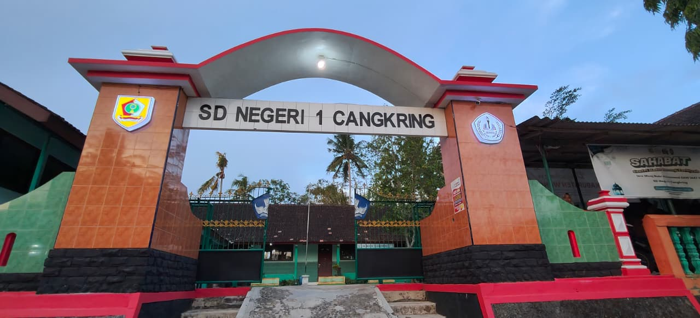

.png)
SD Negeri 1 Cangkring
Sistem Informasi & Manajemen
Sistem Informasi & Manajemen
Portal resmi SD Negeri 1 Cangkring untuk akses cepat data akademik, modul pembelajaran, presensi, dan layanan informasi sekolah secara terpadu.
Masukkan Username Dan Password Untuk Login.
Mengenal lebih dekat identitas, visi, misi, fasilitas, dan tenaga pendidik SD Negeri 1 Cangkring.

Pendidikan berkarakter, berprestasi, dan peduli lingkungan.
Identitas resmi
Kepala Sekolah
SD Negeri 1 Cangkring
Arah Pendidikan
Terwujudnya generasi yang berakhlak mulia, berdaya saing, unggul dalam prestasi, dan peduli lingkungan.
Langkah nyata
Menanamkan keimanan dan ketakwaan kepada Tuhan Yang Maha Esa.
Melaksanakan pembelajaran aktif, kreatif, inovatif, dan menyenangkan.
Mengembangkan potensi akademik maupun nonakademik peserta didik.
Membentuk karakter santun, disiplin, jujur, peduli sosial, dan peduli lingkungan.
Lingkungan belajar
Fasilitas pendukung kegiatan belajar dan pengembangan potensi siswa.
6
1
1
± 1.500 m²
Keluarga sekolah
Daftar nama mengikuti data yang tercantum pada website.
Wahyu Indarto, S.Pd.Jas
Kepala Sekolah
Lilin Nurdaniyah, S.Pd
Guru Kelas 1
Wahyu Nurdiyantoro, S.Pd
Guru Kelas 2
Partin, S.Pd
Guru Kelas 3
Titi Dwijayanti, S.Pd.SD
Guru Kelas 4
Diana, S.Pd
Guru Kelas 5
Yuliani Nur Santi, S.Pd
Guru Kelas 6
Whini Valiana, S.Pd.I
Guru PAIBP
Milka Nugraheni, S.Pd
Guru Agama Kristen
Royan Akhirroma, S.Pd
Guru PJOK
Tarni
PUO
Cerme, RT 01/RW 05, Cangkring, Kecamatan Jatiroto, Kabupaten Wonogiri, Jawa Tengah 57692.
Lihat LokasiPendidikan Berkarakter, Berprestasi, dan Peduli Lingkungan
Bersama membangun generasi cerdas dan berakhlak mulia.